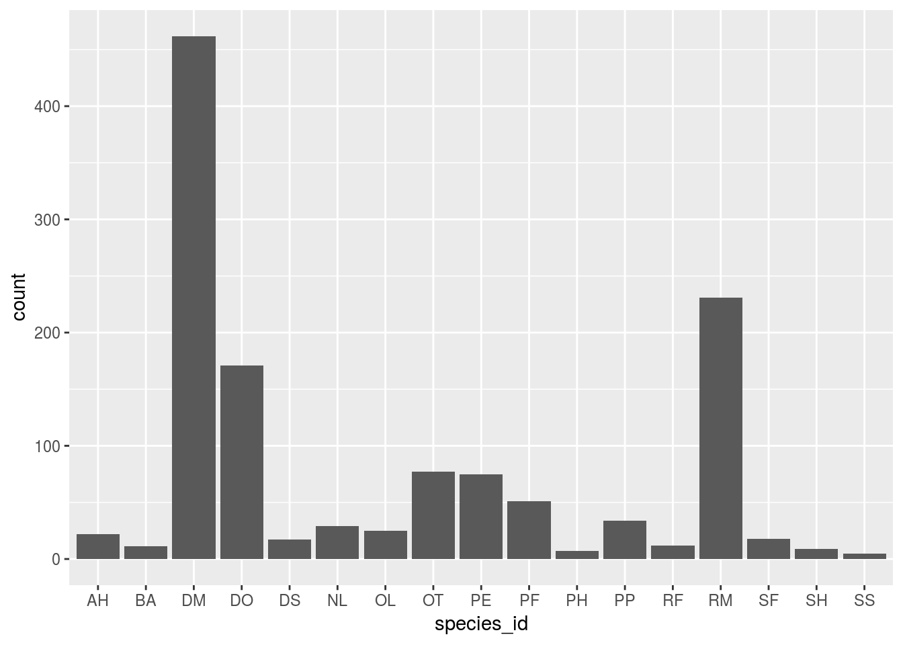
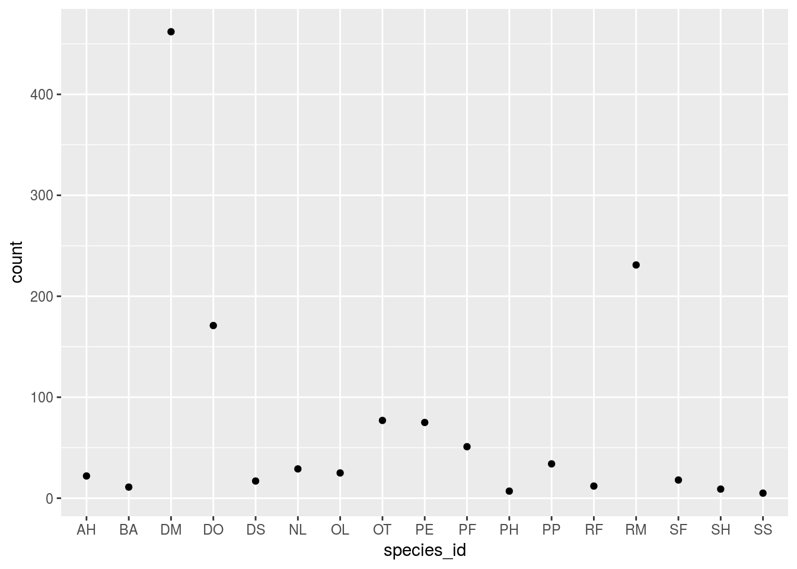
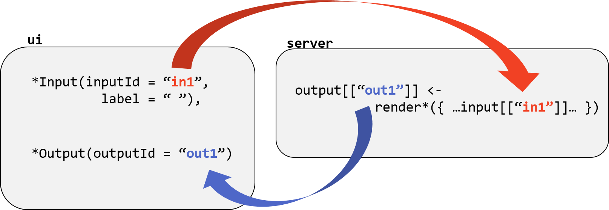

Smart and Interactive Documents
Lesson 9 with Kelly Hondula
How Smart?
The reproducible pipeline under construction begins with open data, uses scripts to perform analyses and create visualizations, and ideally ends in a published write-up.
rmarkdown merges code and documentation, allowing you to create automatic reports that include the results of computations and visualizations created on-the-fly.
How Interactive?
Rather than rendering to a static document, RStudio lets you easily inject shiny input and output widgets to documents constructed with RMarkdown. These widgets can accept user input through forms, menus, and sliders, and cause corresponding tables, plots, and other graphical output to dynamically update.
Interactive documents require connection to a live R process, which any user running RStudio can provide, but so can hosting services like http://www.shinyapps.io/.
Lesson Objectives
- Start with “dumb” documents and the basics of Markdown.
- Envision an efficient, one-click pipeline with RMarkdown.
- Create an interactive document with Shiny.
Markdown
Markdown exists outside of the R environment. Like R, it is both a language and an interpreter.
It is a language with special characters and a syntax that convey formatting instructions inside text files.
The accompanying interpreter reads text files and outputs one of several types of formatted documents (e.g Word, PDF, and HTML).
RMarkdown
The rmarkdown package bundles the formatting ability of Markdown with the ability to send embedded code to an R interpreter and capture the result.
Seeing is Believing
The handout for this lesson is this lesson. The file worksheet-9.Rmd is the RMarkdown source for this document (with a few ommissions for you to fill in). Open it and find this line of code:
data.frame(counts = c(4, 5, 6))## counts
## 1 4
## 2 5
## 3 6The output is not in the source—it was “knit” into the rendered output. Press the “Knit” button in RStudio to generate the single-page view of this lesson. As we proceed, fill in the ... areas of your worksheet, and press the “Knit” button to verify the output.
Markdown Syntax
Before getting to the good stuff, a quick introduction to “dumb” Markdown formatting.
Preformatted Text
Text fenced by ``` is left untouched by the Markdown interpreter, usually for the purpose of displaying code.
The *emphasis* in this text does not become
italicized, as it would outside the "code fence".That’s three backtick characters, found next to the “1” on QWERTY keyboards, above and below the text.
Bulleted Lists (preformatted)
Sequential lines beginning with - are grouped into a bulleted list. The following text shows the syntax (because the special characters are ignored).
- SQL
- Python
- RBulleted Lists
This time, without the code fence, the output contains a list.
- SQL
- Python
- R
Numbered Lists (preformatted)
Sequential lines beginning with 1. are grouped into a numbered list. Conveniently, you don’t have to increment the numbers.
1. SQL
1. Python
1. RNumbered Lists
This time, without the code fence, the output contains a list.
- SQL
- Python
- R
Tables (preformatted)
Separate text with pipes (|) to indicate columns of a table and hyphens (-) to mark the beginning of a table or to separate the header row.
id | treatment
---|----------
1 | control
2 | exclosureTables
This time, without the code fence, the output contains a table.
| id | treatment |
|---|---|
| 1 | control |
| 2 | exclosure |
Configuration
Text at the top of a Markdown file and fenced by --- stores configuration. Variables set here can, for example, change the type of document produced.
---
output: html_document
---Change the output variable to ioslides_presentation and knit again to generate output formatted as a slideshow.
Headers
Default formatting for an html_document differs in some cases from an ioslides_presentation. The use of # to indicate a hierarchy of heading sizes serves an additional purpose in a slideshow.
# The Biggest Heading
## The Second Biggest Heading
### The Third Biggest HeadingThe Biggest Heading
The Second Biggest Heading
The Third Biggest Heading
R + Markdown (preformatted)
The rmarkdown package evaluates the R expressions within a code fence and inserts the result into the output document. To send these “code chunks” to the R interpreter, append {r} to the upper fence.
``
`{r}
seq(1, 10)
``
`R + Markdown
This time, without the outer code fence, the code is evaluated and its output injected into the document.
seq(1, 10)## [1] 1 2 3 4 5 6 7 8 9 10Chunk Options (preformatted)
Each code chunk runs under options specified globally or within the {r ...} expression. The option echo = FALSE would cause the output to render without the input. The option eval = FALSE, would prevent evaluation and output rendering.
``
`{r echo = FALSE}
seq(1, 10)
``
`Chunk Options
This time, without the code fence, the output is rendered without the code.
## [1] 1 2 3 4 5 6 7 8 9 10Chunk Labels (preformatted)
The first entry after {r will be interpretted as a chunk label if it is not setting an option. Chunk options are specified after the optional label and separated by commas.
``
`{r do_not_run, eval = FALSE}
seq(1, 10)
``
`Chunk Labels
This time, without the code fence, the code is echoed but not evaluated. The label does not show up in the document—we have other uses for the label.
seq(1, 10)Reproducible Pipeline
A pipeline might rely on several scripts that separately aquire data, tidy it, fit or run models, and validate results. Embedding calls to those external scripts is one way to create a one-click pipeline.
Sourced Pipeline (preformatted)
The worksheet-9.R file is an R script that produces a rodents data frame, which “sourcing” makes available to subsequent code chunks.
``
`{r load_data, echo = FALSE}
source('worksheet-9.R')
``
`If your entire pipeline can be scripted in R, you could embed the entire analysis in code chunks within your write-up. A better practice is to “modularize” your analysis with isolated scripts, and let your rmarkdown document execute the pipeline.
Sourced Pipeline
This time, without the code fence, the data frame is loaded into the R environment and available to subsequent code chunks.
plt + geom_bar(stat = 'identity')
Non-sourced pipelines (preformatted)
The code interpreter is not limited to R. Several interpreters, including python and sql, can be used for code written directly into a code chunk. Access to your OS shell, for example the Linux “bash” shell, provides a way to run any scripted pipeline steps.
``
`{bash}
python -c "print('Hello, world!')"
``
`Non-sourced pipelines
This time, without the code fence, the output of the shell command is captured and rendered in the document.
python -c "print('Hello, world!')"## Hello, world!An important distinction between sourced and non-sourced pipelines is the inabillity of interpreters other than R to return R objects. By using source, an R script is run in the current R session, which provides an easy way to pass data between scripts. Typically, file-based input and output is necessary for multi-lingual pipelines.
Efficient Pipelines
There is no reason to run every step of a pipeline for changes made “downstream”. Like more comprehensive software for automating pipelines, rmarkdown includes the notion of tracking dependencies and caching results. Cached code chunks are not re-evaluated unless the content of the code changes.
Enable cache in the setup chunk to turn off evaluation of every code chunk that has not been modified since last execution.
``
`{r setup}
library(knitr)
opts_chunk$set(cache = TRUE, message = FALSE, warning = FALSE)
``
`Cache Dependencies (preformatted)
With the dependson option, even an unmodified chunk will be re-evaluated if any chunk included as a dependency runs.
``
`{r base_plot, include = FALSE, dependson = 'load_data'}
library(ggplot2)
plt <- ggplot(rodents, aes(x = species_id, y = count))
``
```
`{r, dependson = 'base_plot', out.width = '80%'}
plt + geom_point()
``
`Cache Dependencies
This time, without the code fence, the plot will be updated anytime the load_data or base_plot chunks runs.
plt + geom_point()
External Dependencies
By adding the option cache.extra, any queue can be given to force re-evaluation of an unmodified chunk. In combination with the md5sum function from the tools package, this permits external file dependencies.
``
`{r setup}
library(knitr)
library(tools)
opts_chunk$set(cache = TRUE, message = FALSE, warning = FALSE)
``
```
`{r load_data, echo = FALSE, cache.extra = md5sum('worksheet-9.R')}
source('worksheet-9.R')
``
`A change to the rodents variable, possibly resulting from filtering in a different year in the worksheet-9.R, will now be reflected in the geom_point plot with dependson = base_plot, but not the geom_bar plot.
Interact with Shiny
Enough on “smart” documents, what about “interactive”?
What is Shiny?
Shiny is a web application framework for R that allows you to create interactive apps for exploratory data analysis and visualization, to facilitate remote collaboration, share results, and much more.
---
output: ioslides_presentation
runtime: shiny
---Input and Output
The shiny package provides functions that generate two key types of content in the output document: input and output “widgets”. The user can change the input and the output, e.g. a table or plot, dynamically responds.

Writing an interactive document requires careful attention to how your input and output objects relate to each other, i.e. knowing what actions will initiate what sections of code to run at what time.
Input Objects (preformatted)
Input objects collect information from the user and save it into a list variable called input. The value for any given named entity in the list updates when the user changes the input widget with the corresponding name.
``
`{r echo = FALSE}
selectInput('pick_species',
label = 'Pick a Species',
choices = unique(species[['id']]))
``
`Input Objects
This time, without the code fence, the drop-down option menu appears in the document.
RStudio has a nice gallery of input objects and accompanying sample code.
Output objects (preformatted)
Output objects are created by several functions in the shiny package that produce a range of widgets.
``
`{r echo = FALSE}
renderPlot(
animals %>%
filter(species_id == input[['pick_species']]) %>%
ggplot(aes(year)) +
geom_bar()
``
`Output objects
This time, without the code fence, the document contains whatever plot the user chose to view.
![]()
Render Functions
Key functions for creating output objects:
renderPrint()renderText()renderPlot()renderTable()renderDataTable()
Reactivity
The output objects in an interactive document have to be understood in terms of reactivity: each one “knows” its content should react to certain changes in the environment, including to the input list.
Create additional environment-aware objects with reactive() from the shiny package. A useful type of reactive object for an efficient pipeline is the result of data manipulations, which can be calculated once and used multiple times.
``
`{r echo = FALSE, cache = FALSE}
plot_data <- reactive({
filter(animals,
species_id == input[['pick_species']])
})
``
```
`{r echo = FALSE, cache = FALSE}
renderPlot({
plot_data() %>%
ggplot(aes(year)) +
geom_bar()
})
``
`In the worked example, the step of filtering the animals data frame still only occurs once. In a scenario where the subset of animals were used for multiple computations or vizualitions, creating the reactive plot_data() object makes a more efficient pipeline.
Exercises
Exercise 1
Create a table with two columns, starting with a header row with fields “Character” and “Example”. Fill in the table with rows for the special Markdown characters *, **, ^, and ~, providing an example of each.
Exercise 2
Display your presentation on GitHub. Your repository on GitHub includes a free web hosting service known as GitHub Pages. Publish your worksheet there with the following steps.
- Copy the resulting HTML file to
docs/index.html. - Stage, commit & push the
docs/index.htmlfile to GitHub. - On GitHub, under Settings > GitHub Pages, set
docs/as the source.
Solutions
Solution 1
| character | format |
|---|---|
| * | italics |
| ** | bold |
| ^ | superscript |
| ~~ |
Solution 2
Just follow the instructions!